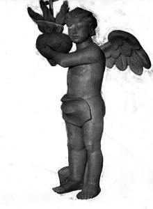

|
Na tym zdjęciu widzimy początkowe prace podczas rekonstrukcji hełmu wieży kościelnej. Nigdy się nie zastanawiałem nad tym, czy hełmy były budowane na poziomie ziemi czy też na wieży kościelnej. |
| Ale jak widać na prezentowanych zdjęciach budowano je "na dole". Najprawdopodobniej po przygotowaniu wszystkich elementów gotowy hełm był demontowany na mniejsze części i w takim stanie transportowany na wieżę. | |
 |
Na podstawie tego zdjęcia można ustalić, gdzie hełmy były budowane. Widoczne w tle krzeszowskie kościoły pozwalają stwierdzić, że miejscem powstawania hełmów był Krzeszów, dzisiaj zwany "dołem" Krzeszowa, okolice dzisiejszego boiska sportowego. |
| A to pierwsze z 6 zdjęć przedstawiających procesję z okazji przewiezienia elementów hełmu do kościoła. | |
| Teraz kolejne trzy zdjęcia zrobione są w tym samym miejscu. | |
 |
Moim zdaniem jest to ulica dzisiaj wiodąca od "pomnika" do Ośrodka Zdrowia. |
| Tutaj widać, że sam "wierzchołek" hełmu transportowano w całości. | |
 |
Miejsce gdzie wykonano to zdjęcie jest dla mnie zagadką. (dodane 26 maja 2004 roku) A jednak ktoś przegląda moją stronę WWW :-) Ostatnio uzyskałem taką informację (chyba aż z Kanady): "Ja mogę Panu podpowiedzieć trochę. To zdjęcie jest zrobione koło piekarni. W Krzeszowie były dwie piekarnie: ta na zdjęciu (i ledwo widoczny dom za nią) od dawna sa zburzone, druga od 1965 jest nieczynna, ale dom wciąż stoi. Jeszcze w latach 70 był widoczny niemeicki napis. Miejsce i domy ze zdjęcia w9m są dobrze widoczne na innych zdjęciach (...)". Dziękuję za pomoc, Richard :-) (dodane 19 czerwca2005 roku) Choć z początku trudno w to uwierzyć, to na zdjęciu widoczne jest dzisiejsze skrzyżowanie dróg Kamienna Góra - Chełmsko Śląskie - Lipienica - Mieroszów (Grzędy). A widoczna uliczka to właśnie droga na Mieroszów (Grzędy). |
|  | A teraz dwa zdjęcia figury anioła ze szczytu wieży kościelnej. Tutaj figura jeszcze przed złoceniem. |
 |
Figura już gotowa do transportu w górę przed wejściem głównym do kościoła. |
| Częściowo zmontowany hełm. | |
| "Wiecha" na szczycie wieży. | |
| I już całość drewnianego hełmu została pokryta blachą miedzianą. |
{kind=link}
{kind=link}
{kind=link}
{kind=link}
{kind=link}
{kind=link}
{kind=link}
{kind=link}
{kind=link}